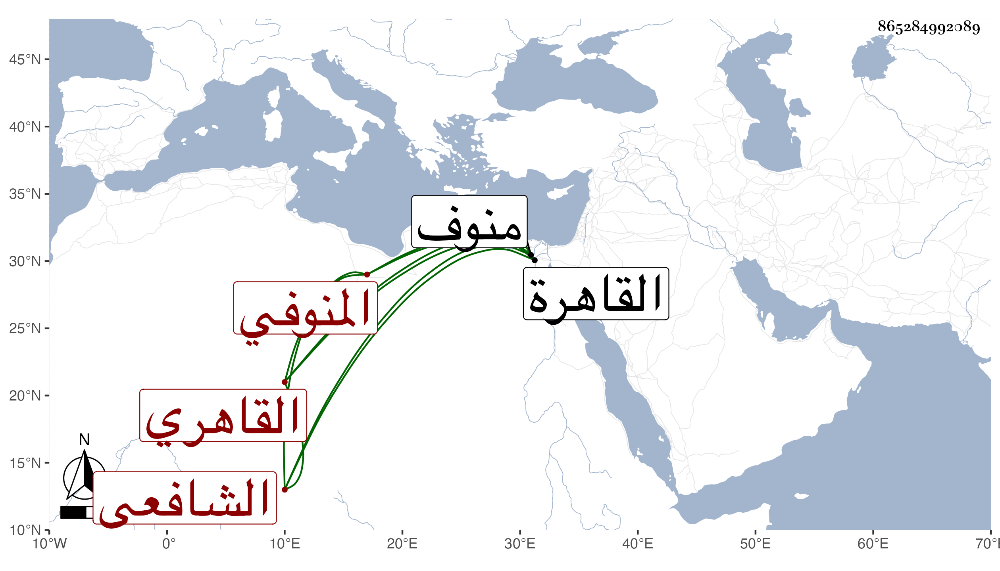

0902Sakhawi.DawLamic.ITO20230111-ara1.EIS1600.865284992089
Biography ID: 865284992089
319
محمد بن يوسف بن موسى بن يوسف الشمس أبو الفضل المنوفي ثم القاهري الشافعي أخو الشرف موسى الآتي ويعرف بزين الصالحين . ولد سنة خمس وثمانمائة بمنوف ونشأ بها فحفظ القرآن وعقيدة الغزالي والمنهاجين الفرعي والأصلي والملحة وألفية ابن ملك عند أبيه وقدم القاهرة فعرض على جماعة وقطنها مديما للاشتغال في الفقه وأصله والعربية وغيرها فكان ممن أخذ عنه الفقه الشرف السبكي وبه انتفع والجمال الأمشاطي والونائي والعلم البلقيني والشهاب المحلي خطيب جامع ابن ميالة وعنه أخذ في ابتدائه العربية وأخذ في الفرائض والحساب وغيرهما من الفنون عن ابن المجدي وفي العربية والصرف والمنطق وغيرها عن العز عبد السلام البغدادي وفي العربية فقط عنا لحناوي وسمع من شيخنا في الأمالي وغيرها وكذا سمع الزين الزركشي وغيره ولا زال يدأب حتى أذن له في التدريس والإفتاء وتصدى للإقراء في حياة بعض شيوخه بجامع الأزهر وبالناصرية وغيرهما كالمسجد الكائن بخط الجوانية وبالمدرسة الكائنة بقنطرة طقزدمر جوار سكنه ، وقسم الكتب وولي مشيخة التصوف بالبيبرسية بعد شيخه السبكي ولم ينفك عن الاشتغال حتى مات في صفر سنة خمس وخمسين وكان فقيها فاضلا خيرا ساكنا قانعا متوددا رحمه الله وإيانا .
